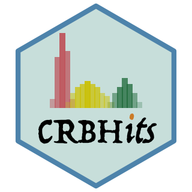
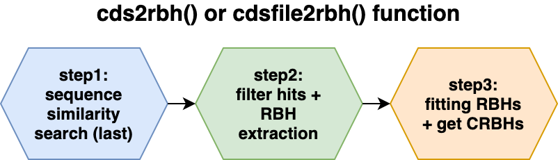

CRBHits 


CRBHits - From Conditional Reciprocal Best Hits to Codon Alignments and Ka/Ks in R
R package source code: https://gitlab.gwdg.de/mpievolbio-it/crbhits
R package pages: https://mpievolbio-it.pages.gwdg.de/crbhits/
R package issues: https://gitlab.gwdg.de/mpievolbio-it/crbhits/issues
CRBHits - Description
CRBHits is a reimplementation of the Conditional Reciprocal Best Hit (CRBH) algorithm crb-blast in R. It covers all necessary steps from CRBHit pair calculation to Codon Alignments and Ka/Ks.
The CRBH algorithm was introduced by Aubry S, Kelly S et al. (2014) and ported to python shmlast (Scott C. 2017) which benefits from the blast-like sequence search software LAST (Kiełbasa SM et al. 2011).
Like shmlast, CRBHits plots the fitted model of the CRBHit evalue based algorithm. In addition users can filter the CRBHit pairs prior fitting for other criteria like evalue, protein identity and/or the twilight zone of protein sequence alignments according to Rost B. (1999).
CRBHits only takes coding nucleotide sequences as the query and target inputs, since the secondary aim of CRBHits is to calculate synonymous and non-synonymous substitutions with the R package seqinr (Sharif D, Lobry JR. 2007) or the external tool KaKs_Calculator2.0 (Wang D, Zhang Y et al. 2010).
This is in contrast to crb-blast, which can take proteins or nucleotides as the target sequences and in contrast to shmlast, which uses nucleotides as queries and proteins as target sequences.
The resulting CRBHit pairs can be used to obtain pairwise codon alignments, which are further used to calculate synonymous and nonsynonymous substitutions using parallelization.
The Ka/Ks (also sometimes denoted as dN/dS) values can be obtained either via the codon model of Li WH. (1999) as implemented in the R package seqinr or the model of Yang Z and Nielson R. (2000) as implemented in KaKs_Calculator2.0.
The following two images show the two main functions of the package cds2rbh() and rbh2kaks(), which are described in more detail in the package vignettes.


Installation
see also here for the R package pages https://mpievolbio-it.pages.gwdg.de/crbhits/
R specific installation prerequisites
install packages from cran
In most cases you need to first install the following system-wide packages to be able to compile the R dependencies. If you do not have ‘sudo’ rights, please ask your system-admin to install them for you.
Ubuntu/Debian
sudo apt-get install libcurl4-openssl-dev libssl-dev libxml2-dev libglu1-mesa-dev libgit2-dev
#Pandoc is required to build R Markdown vignettes
#sudo apt-get install pandoc
#pkgdown dependencies - pkgdown is used to build R package pages
#sudo apt-get install libssh2-1-dev libfontconfig1-dev libharfbuzz-dev libfribidi-dev libfreetype6-dev libpng-dev libtiff5-dev libjpeg-devCentOS
sudo yum install libcurl-devel openssl-devel libxml2-devel mesa-libGLU-devel libgit2-devel
#Pandoc is required to build R Markdown vignettes
#sudo yum install pandoc
#pkgdown dependencies - pkgdown is used to build R package pages
#sudo yum install libssh2-devel fontconfig-devel harfbuzz-devel fribidi-devel freetype-devel libpng-devel libtiff-devel libjpeg-turbo-develinstall.packages("devtools")install CRBHits
devtools::install_gitlab("mpievolbio-it/crbhits", host = "https://gitlab.gwdg.de",
build_vignettes = FALSE, dependencies = TRUE)
#devtools::install_github("kullrich/CRBHits", build_vignettes = FALSE, dependencies = TRUE)
CRBHits::make_last()
CRBHits::make_KaKs_Calculator2()
CRBHits::make_dagchainer()If the functions CRBHits::make_last(), CRBHits::make_KaKs_Calculator2() and CRBHits::make_dagchainer() fail on your system to install the prerequisites, please take a look at the detailed description how to install via e.g. conda or to compile from source.
Vignettes
These vignettes introduce CRBHits
-
CRBHits Basic Vignette - Basic Usage of CRBHits
- includes CRBHit pair calculation
- includes CRBHit pair filtering
- includes Longest Isoform selection
- includes Codon alignments
- includes Ka/Ks calculations
-
KaKs Vignette - KaKs Calculations between two species and subsequent data filter steps
- includes Arabidopsis thalina and Arabidopsis lyrata CRBHit pair calculation
- includes Homo sapiens and Pan troglodytes CRBHit pair calculation
- inlcudes Longest Isoform selection
- includes Gene/Isoform chromosomal position extraction
- includes Tandem Duplicate Assignment
- includes Synteny Assignment
- includes Ka/Ks colored Dot-Plot
Quick-guide
library(CRBHits)
## prerequisite: last
## if not done yet, try to compile last-1521 - uncomment the following line
#CRBHits::make_last()
## conditional reciprocal best hits (CRBHit pairs)
data("ath", package="CRBHits")
data("aly", package="CRBHits")
ath_aly_crbh <- cds2rbh(
cds1=ath,
cds2=aly,
plotCurve=TRUE)
summary(ath_aly_crbh)
?cds2rbh
##kaks calculation - subset model "Li"
ath_aly_crbh$crbh.pairs <- head(ath_aly_crbh$crbh.pairs, 20)
ath_aly_crbh.kaks.Li <- rbh2kaks(
rbhpairs=ath_aly_crbh,
cds1=ath,
cds2=aly,
model="Li")
head(ath_aly_crbh.kaks.Li)
?rbh2kaks
## plot kaks
g.kaks.Li <- plot_kaks(ath_aly_crbh.kaks.Li)
?plot_kaks
## kaks calculation - subset model "YN"
## prerequisite: KaKs_Calculator2
## if not done yet, try to compile KaKs_Calculator2 - uncomment the following line
#CRBHits::make_KaKs_Calculator2()
ath_aly_crbh.kaks.YN <- rbh2kaks(
rbhpairs=ath_aly_crbh,
cds1=ath,
cds2=aly,
model="YN")
## kaks calculation using multiple threads
ath_aly_crbh.kaks <- rbh2kaks(
rbhpairs=ath_aly_crbh,
cds1=ath,
cds2=aly,
threads=2)
head(ath_aly_crbh.kaks)
## example how to calculate all pairwise kaks values given a MSA
data(hiv)
hiv_kaks.Li <- dnastring2kaks(
cds=hiv,
model="Li")
g.Li <- plot_kaks(hiv_kaks.Li)
g.Li
data(hiv)
hiv_kaks.NG86 <- dnastring2kaks(
cds=hiv,
model="NG86")
g.NG86 <- plot_kaks(hiv_kaks.NG86)
g.NG86
## codon plot - sites under possible positive selection
library(tidyr)
library(dplyr)
library(ggplot2)
hiv.xy <- codonmat2xy(dnastring2codonmat(hiv))
hiv.xy %>% select(Codon, SynMean, NonSynMean, IndelMean) %>%
gather(variable, values, -Codon) %>%
ggplot(aes(x=Codon, y=values)) +
geom_line(aes(colour=factor(variable))) +
geom_point(aes(colour=factor(variable))) +
ggtitle("HIV-1 sample 136 patient 1 from Sweden envelope glycoprotein (env) gene")
##### see section install external tools via bioconda
## example how to use conda version of LAST
my.lastpath <- paste0(dirname(system2("which", "lastdb", stdout=TRUE)), "/")
ath_aly_crbh <- cds2rbh(ath, aly, plotCurve = TRUE,
lastpath = my.lastpath)
?cds2rbh
## example how to use conda version of KaKs_Calculator2.0
my.kakspath <- paste0(dirname(system2("which", "KaKs_Calculator", stdout=TRUE)), "/")
ath_aly_crbh.kaks <- rbh2kaks(ath_aly_crbh,
ath, aly, model = "YN",
kakscalcpath = my.kakspath)
?rbh2kaks
##### see section compile external tools from original source code
## example how to use own compiled version of LAST
my.lastpath <- "/tmp/last/last-1521/bin"
ath_aly_crbh <- cds2rbh(ath, aly, plotCurve = TRUE,
lastpath = my.lastpath)
?cds2rbh
## example how to use conda version of KaKs_Calculator2.0
my.kakspath <- "/tmp/KaKs_Calculator2/KaKs_Calculator2.0_src/src"
ath_aly_crbh.kaks <- rbh2kaks(ath_aly_crbh,
ath, aly, model = "YN",
kakscalcpath = my.kakspath)
?rbh2kaksExternal tools installation prerequisites - detailed description
install external tools via bioconda
If the functions CRBHits::make_last(), CRBHits::make_KaKs_Calculator2() and CRBHits::make_dagchainer() fail on your system to install the prerequisites, there is the possibility to install them via conda:
conda config --add channels defaults
conda config --add channels bioconda
conda config --add channels conda-forge
conda install last
conda install kakscalculator2
conda install dagchainer
#optional sequence search algorithm
conda install mmseqs2
conda install diamondAfter this installation, the prerequisites are supposed to be in the PATH and you need to set the correct @param in the corresponding functions of CRBHits like this:
## example how to use conda versions of LAST, KaKs_Calculator2.0 and DAGchainer
my.lastpath <- paste0(dirname(system2("which", "lastdb", stdout=TRUE)), "/")
my.kakspath <- paste0(dirname(system2("which", "KaKs_Calculator", stdout=TRUE)), "/")
my.dagchainerpath <- paste0(dirname(system2("which", "dagchainer", stdout=TRUE)), "/")
?cds2rbh
cds2rbh(., ., lastpath=my.lastpath)
?rbh2kaks
rbh2kaks(., ., model="YN", kakscalcpath=my.kakspath)
?rbh2dagchainer
rbh2dagchainer(., ., dagchainerpath=my.dagchainerpath)
## example how to use conda versions of MMSEQS2 and DIAMOND
my.mmseqs2path <- paste0(dirname(system2("which", "mmseqs", stdout=TRUE)), "/")
my.diamondpath <- paste0(dirname(system2("which", "diamond", stdout=TRUE)), "/")
?cds2rbh
cds2rbh(., ., mmseqs2path=my.mmseqs2path, searchtool="mmseqs2")
cds2rbh(., ., mmseqs2path=my.diamondpath, searchtool="diamond")compile external tools from source code forked within this package
The source code for the prerequisites (LAST, KaKs_Calculator2.0, DAGchainer) are forked within CRBHits.
To compile the forked version of LAST within the CRBHits R package directory try to use the function make_last():
## see more installation information here, if make fails
## last-install-help: https://gitlab.com/mcfrith/last
CRBHits::make_last()To compile the forked version of KaKs_Calculator2.0 within the CRBHits R package directory try to use the function make_KaKs_Calculator2():
## compile KaKs_Calculator2
CRBHits::make_KaKs_Calculator2()To compile the forked version of DAGchainer within the CRBHits R package directory try to use the function make_dagchainer():
## compile DAGchainer
CRBHits::make_dagchainer()compile external tools from original source code
If you would like to install the latest version of the tools, you need to download the source code and compile again.
To compile LAST yourself on Linux/Unix/macOS into another folder:
## create and change into the directory to install LAST
## e.g.
mkdir /tmp/last
cd /tmp/last
## donwload last-1521
curl -O https://gitlab.com/mcfrith/last/-/archive/1521/last-1521.zip
unzip last-1521.zip
cd last-1521
## compile LAST
makeTo compile KaKs_Calculator2.0:
Note: Due to some changes in the latest g++ compilers the source code was altered to meet this changes, which are directly incorporated into the KaKs_Calculator2.0.tar.gz that is distributed with CRBHits. It is recommended to compile from this file (see below):
## create and change into the directory to install KaKs_Calculator2
## e.g.
mkdir /tmp/KaKs_Calculator2
cd /tmp/KaKs_Calculator2
## donwload KaKs_Calculator2
curl -O https://gitlab.gwdg.de/mpievolbio-it/crbhits/-/raw/devel/inst/extdata/KaKs_Calculator2.0_src.tar.gz
tar -xvf KaKs_Calculator2.0_src.tar.gz
cd KaKs_Calculator2.0_src/src
## compile KaKs_Calculator2
make clean
makeTo compile DAGchainer:
Note: Due to some changes in the latest g++ compilers the source code was altered to meet this changes, which are directly incorporated into the dagchainer.zip that is distributed with CRBHits. It is recommended to compile from this file (see below):
## create and change into the directory to install DAGchainer
## e.g.
mkdir /tmp/DAGchainer
cd /tmp/DAGchainer
## donwload DAGchainer
curl -O https://gitlab.gwdg.de/mpievolbio-it/crbhits/-/raw/devel/inst/extdata/dagchainer.zip
unzip dagchainer.zip
cd dagchainer
## compile DAGchainer
makeIf you would like to use your own compiled versions of LAST, KaKs_Calculator2.0 and DAGchainer you need to set the correct @param in the corresponding functions of CRBHits.
## example how to use own compiled versions of LAST, KaKs_Calculator2.0 and DAGchainer
my.lastpath <- "/tmp/last/last-1521/bin"
my.kakspath <- "/tmp/KaKs_Calculator2/KaKs_Calculator2.0_src/src"
my.dagchainerpath <- "/tmp/dagcahiner"
?cds2rbh
cds2rbh(., ., lastpath=my.lastpath)
?rbh2kaks
rbh2kaks(., ., model="YN", kakscalcpath=my.kakspath)
?rbh2dagchainer
rbh2dagchainer(., ., dagchainerpath=my.dagchainerpath)To compile MMseqs2
To compile diamond
License
MIT (see LICENSE)
The CRBHits package includes source code that has been published under following licenses:
last-1521.zip
GNU General Public License Version 3, 29 June 2007 GPLv3
KaKs_Calculator2.0.tar.gz
The toolkit is freely available (licensed under GPLv3) online at https://sourceforge.net/projects/kakscalculator2/.
Contributing Code
If you would like to contribute to CRBHits, please file an issue so that one can establish a statement of need, avoid redundant work, and track progress on your contribution.
Before you do a pull request, you should always file an issue and make sure that someone from the CRBHits developer team agrees that it’s a problem, and is happy with your basic proposal for fixing it.
Once an issue has been filed and we’ve identified how to best orient your contribution with package development as a whole, fork the main repo, branch off a feature branch from devel, commit and push your changes to your fork and submit a pull request for CRBHits:devel.
By contributing to this project, you agree to abide by the Code of Conduct terms.
Bug reports
Please report any errors or requests regarding CRBHits to Kristian Ullrich (ullrich@evolbio.mpg.de)
or use the issue tracker at https://gitlab.gwdg.de/mpievolbio-it/crbhits/issues
Code of Conduct - Participation guidelines
This repository adhere to Contributor Covenant code of conduct for in any interactions you have within this project. (see Code of Conduct)
See also the policy against sexualized discrimination, harassment and violence for the Max Planck Society Code-of-Conduct.
By contributing to this project, you agree to abide by its terms.
References
Aubry S., Kelly S., Kümpers B. M., Smith-Unna R. D., and Hibberd J. M. (2014). Deep evolutionary comparison of gene expression identifies parallel recruitment of trans-factors in two independent origins of C4 photosynthesis. PLoS Genetics, 10(6). https://doi.org/10.1371/journal.pgen.1004365
Buchfink B., Reuter K., Drost HG. (2021). Sensitive protein alignments at tree-of-life scale using DIAMOND. Nature Methods, 18, 366-368. https://doi.org/10.1038/s41592-021-01101-x
Charif D., and Lobry J. R. (2007). SeqinR 1.0-2: a contributed package to the R project for statistical computing devoted to biological sequences retrieval and analysis. In Structural approaches to sequence evolution (pp. 207-232). Springer, Berlin, Heidelberg. https://link.springer.com/chapter/10.1007/978-3-540-35306-5_10
Duong T., and Wand M. (2015). feature: Local Inferential Feature Significance for Multivariate Kernel Density Estimation. R package version 1.2.13. https://cran.r-project.org/web/packages/feature/
Ganeshan S., Dickover RE., Korber BT., Bryson YJ., Wolinsky SM. (1997). Human immunodeficiency virus type 1 genetic evolution in children with different rates of development of disease. Journal of Virology, 71(1), 663-677.
Haas B. J., Delcher A. L., Wortman J. R., and Salzberg S. L. (2004). DAGchainer: a tool for mining segmental genome duplications and synteny. Bioinformatics, 20(18), 3643-3646. https://doi.org/10.1093/bioinformatics/bth397
Haug-Baltzell A., Stephens S. A., Davey S., Scheidegger C. E., Lyons E. (2017). SynMap2 and SynMap3D: web-based wholge-genome synteny browsers. Bioinformatics, 33(14), 2197-2198. https://academic.oup.com/bioinformatics/article/33/14/2197/3072872
Kiełbasa S. M., Wan R., Sato K., Horton P., and Frith M. C. (2011). Adaptive seeds tame genomic sequence comparison. Genome Research, 21(3), 487-493. https://doi.org/10.1101/gr.113985.110
Kimura M. (1977). Preponderance of synonymous changes as evidence for the neutral theory of molecular evolution. Nature, 267, 275-276.
Li W. H. (1993). Unbiased estimation of the rates of synonymous and nonsynonymous substitution. Journal of Molecular Evolution, 36(1), 96-99. https://doi.org/10.1007/bf02407308
Microsoft, and Weston S. (2020). foreach: Provides Foreach Looping Construct. R package version, 1.5.1. foreach
Mugal C. F., Wolf J. B. W., Kaj I. (2014). Why Time Matters: Codon Evolution and the Temproal Dynamics of dN/dS. Molecular Biology and Evolution, 31(1), 212-231.
Nei M. and Gojobori T. (1986). Simple methods for estimating the numbers of synonymous and nonsynonymous nucleotide substitutions. Molecular Biology and Evolution, 3(5), 418-426. https://doi.org/10.1093/oxfordjournals.molbev.a040410
Ooms J. (2019). curl: A Modern and Flexible Web Client for R. R package version, 4.3. curl
Ota T. and Nei M. (1994). Variance and covariances of the numbers of synonymous and nonsynonymous substitutions per site . Molecular Biology and Evolution, 11(4), 613-619. https://doi.org/10.1093/oxfordjournals.molbev.a040140
Pagès H., Aboyoun P., Gentleman R., and DebRoy S. (2017). Biostrings: Efficient manipulation of biological strings. R package version, 2.56.0. Biostrings
Paradis E., Schliep K. (2019). ape 5.0: an environment for modern phylogenetics and evolutionary analyses in R. Bioinformatics, 35, 526-528.
Revolution Analytics, and Weston S. (2020). doMC: Foreach Parallel Adaptor for ‘parallel’. R package version, 1.3.7. doMC
Rost B. (1999). Twilight zone of protein sequence alignments. Protein Engineering, 12(2), 85-94. https://doi.org/10.1093/protein/12.2.85
Scott C. (2017). shmlast: an improved implementation of conditional reciprocal best hits with LAST and Python. Journal of Open Source Software, 2(9), 142. https://joss.theoj.org/papers/10.21105/joss.00142
Scrucca L., Fop M., Murphy T. B., and Raftery A. E. (2016). mclust 5: clustering, classification and density estimation using Gaussian finite mixture models. The R Journal, 8(1), 289-317. https://www.ncbi.nlm.nih.gov/pmc/articles/PMC5096736/
Steinegger M., and Soeding J. (2017). MMseqs2 enables sensitive protein sequence searching for the analysis of massive data sets. Nature Biotechnology, 35, 1026-1028. https://doi.org/10.1038/nbt.3988
Wickham H. (2011). testthat: Get Started with Testing. The R Journal, 3(1), 5. testthat
Wickham H. (2019). stringr: Simple, Consistent Wrappers for Common String Operations. R package version, 1.4.0. stringr
Wickham H. (2020). tidyr: Tidy Messy Data. R package version, 1.1.2. tidyr
Wickham H., Hester J., and Chang W. (2020). devtools: Tools to make Developing R Packages Easier. R package version, (2.3.2). devtools
Wickham H., François R., Henry L., and Müller K. (2020). dplyr: A Grammar of Data Manipulation. R package version, 1.0.2. dplyr
Yang Z., and Nielsen R. (2000). Estimating synonymous and nonsynonymous substitution rates under realistic evolutionary models. Molecular Biology and Evolution, 17(1), 32-43. https://doi.org/10.1093/oxfordjournals.molbev.a026236
Yang Z., Nielsen R., Goldman N., Pedersen AM. (2000). Codon-substitution models for heterogeneous selection pressure at amino acid sites. Genetics, 155(1), 431-449. https://www.ncbi.nlm.nih.gov/pmc/articles/PMC1461088